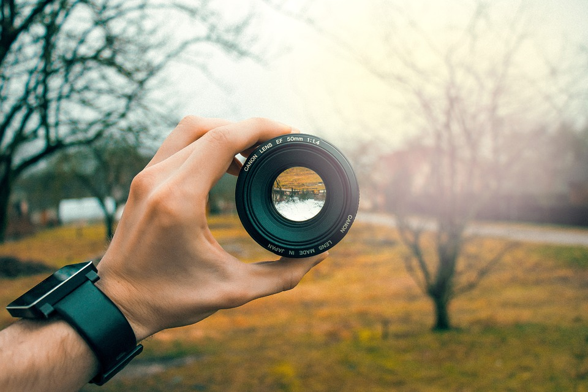
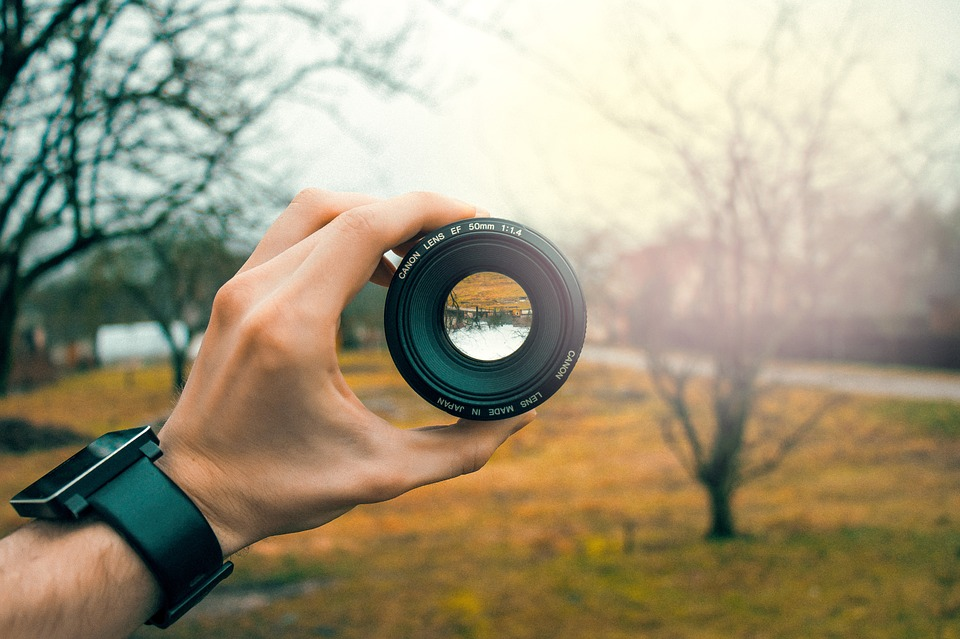

Table of Contents
To the untrained eye, a camera is simply a box with a button that takes a screen capture of what you point it at. In reality, the physical mechanics of the device is a miracle that is centuries in the making. The oldest known record of a camera was as early as 470 B.C. by the Chinese. They had discoverd the "camera obscura" which is Latin for "Dark room," its the phenomenon and physics behind how a camera works. It's a natural occurence that when an image of a scene on one side of a screen is projected through a small hole, it forms an inverted image on the opposite side of the screen. Over the duration of mankind, we have developed and manipulated this idea to create the cameras we use today. To put it simply, think about a polaroid camera. It's a simple box, with a button that opens and closes a shutter which reveals nothing but a tiny hole. Behind that hole is a square photosensitive piece of paper that when exposed to light, the light is burned into the paper. When you point the camera at the object, press the shutter, the hole is revealed and camera obscura happens in milliseconds. The image is inverted onto the photo- sensitive paper, burns the image onto the paper, and prints it out. Certain chemicals fix the image onto the paper which stops the developing process when printed.
 
